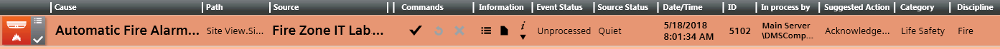

Fast Treatment
When an event occurs, the corresponding lamp lights up and blinks in the Summary bar, and the event counter in the lamp increments. The audio alert activates.
Select an Event in the List
- Click the row of the event that you want to handle.
NOTE: In some configurations, certain types of events autoselect when they occur, in which case you will not have to perform this step.
- The event is selected and its event descriptor becomes highlighted:
- The In process by field updates to indicate you are currently handling this event.
- If any other event was previously selected, it is automatically deselected (suspended).

Select Multiple Events in the List
- To perform a multiple selection, do one or more of the following:
- Press CTRL+A to select all the events in the list.
- Hold CTRL and click the event buttons one-by-one, to add events to the selection.
- Hold SHIFT and click the first and last event buttons of a range to add a contiguous set of events to the selection.
- To remove an event from the selection, press CTRL and click its event button.
- To deselect all the events in the selection, click the event button of any one of the selected events.
- A group of events is selected, and their event descriptors display highlighted. Any commands you issue will be sent to all the events for which that command is available.
Send Event Handling Commands
From the event descriptor, use the icons in the Commands column to send any commands as they become available. The commands you must send will vary depending on configuration. A typical sequence may include:
- Click
 to acknowledge the event.
to acknowledge the event. - This action also causes any audible alarm sound of the field panel to be silenced.
- After acknowledging the event, click
 to silence or click
to silence or click  to unsilence the detection line.
to unsilence the detection line.
This means that if a field panel is connected to a detection line with horns, you can silence any horns audible sound in the site or turn it back. - Click
 to reset the event.
to reset the event. - Click
 to close the event.
to close the event.
Check the Event Status
When no further commands are available, use the Event Status and Suggested Action columns to determine the next action you need to take. A typical sequence may include:
- Event Status =
Waiting for condition: - Suggested Action =
Complete operating procedure. No further commands are available because you must first complete at least the mandatory steps of the operating procedure.
a. In the Information column, click Open related treatment to open the assisted treatment window.
to open the assisted treatment window.
b. Complete the operating procedure. - Suggested Action =
Wait for condition. The event cannot be reset until the event source is back to normal.
a. You must correct the situation that caused the event or wait for the Source Status to return toQuietbefore you can send the remaining commands. - Event Status =
Closed. You finished handling this event, and the event is ready to be cleared from the list. Click the event button again to deselect the event. It will then be removed from Event List.
Get More Information About the Event
You can do one or more of the following to get more information about an event or its source.
- View the inline information text:
a. In the Information column, click Show information text .
b. Any technical information available for that event displays. The text provided in the Message text column is also repeated here.
c. Click the icon again to hide the information. - Open the Contextual pane without leaving Event List:
a. In the window header, click the advanced layout icon .
b. The Operation and Extended Operation tabs display at the bottom of the window. From here you can:
- Inspect the properties of the point that issued the event.
- View and execute any commands/actions available for that object.
c. When you are finished, to hide the Contextual pane click the primary layout icon .
Log an Event Note in the History Database
You can optionally log a note about the event in the history database.
- In the Information column, click Log an event note .
- In the Note Editor dialog box, enter the text of the note, and click OK.
- The note is stored in the History Database. If you selected multiple events, this note will be logged as applying to all those events. You can generate a report (Activity Log or Event Detail Log) to print any logged event notes.
Interrupt Handling of an Event
You can interrupt the handling of an event at any time, for example, because a more important event has come in that you want to deal with right away.
- To interrupt handling of an event, do one of the following:
- Click the event button again.
- Select a different event in the list.
- The event is deselected and no longer appears highlighted. Its Event Status remains as it was when you interrupted handling the event. You can resume handling this event at any time by selecting it again.
Finish Handling an Event
When you have finished handling an event its Event Status changes to Closed. Depending on configuration, the event may be automatically cleared from the list. Otherwise:
- Click the event button again to deselect the event and clear it from the list.